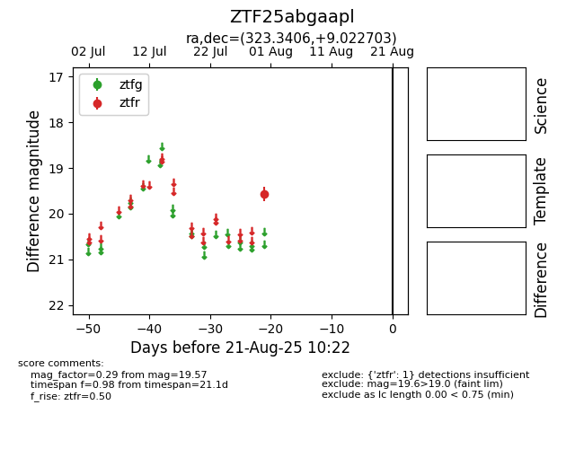

Target ZTF25abgaapl at 2025-08-21 10:22, see:
FINK: fink-portal.org/ZTF25abgaapl
Lasair: lasair-ztf.lsst.ac.uk/objects/ZTF25abgaapl
ALeRCE: alerce.online/object/ZTF25abgaapl
alt names
ZTF25abgaapl (ztf,alerce)
coordinates:
equatorial (ra, dec) = (323.3406,+9.02270)
galactic (l, b) = (62.8302,-29.94169)
photometry
last ztfr=19.57
1 ztfr detections
